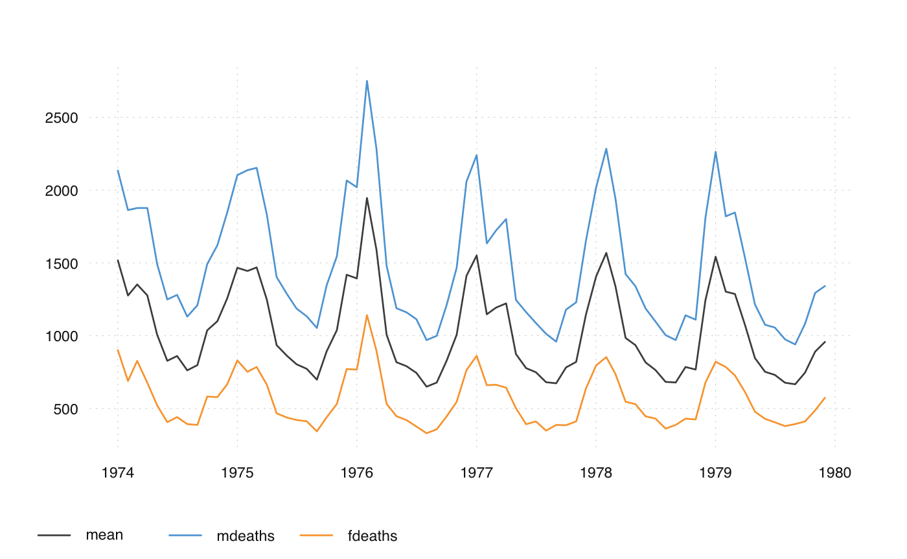

ts_ turns an existing function into a function that can deal with
ts-boxable time series objects.
load_suggested(pkg) ts_(fun, class = "ts", vectorize = FALSE, reclass = TRUE)
| pkg | external package, to be suggested (automatically added by |
|---|---|
| fun | function, to be made available to all time series classes |
| class | class that the function uses as its first argument |
| vectorize | should the function be vectorized? (not yet implemented) |
| reclass | logical, should the new function return the same same ts-boxable output as imputed? |
A function that accepts ts-boxable time series as an input.
The ts_ function is a constructor function for tsbox time series functions. It
can be used to wrap any function that works with time series. The default is set
to R base "ts" class. ts_ deals with the conversion stuff, 'verctorizes' the
function so that it can be used with mulitple time series.
ts_examples, for a few useful examples of functions generated by ts_.
#> Jan Feb Mar Apr May Jun Jul Aug Sep Oct Nov Dec #> 1974 3035 2552 2704 2554 2014 1655 1721 1524 1596 2074 2199 2512 #> 1975 2933 2889 2938 2497 1870 1726 1607 1545 1396 1787 2076 2837 #> 1976 2787 3891 3179 2011 1636 1580 1489 1300 1356 1653 2013 2823 #> 1977 3102 2294 2385 2444 1748 1554 1498 1361 1346 1564 1640 2293 #> 1978 2815 3137 2679 1969 1870 1633 1529 1366 1357 1570 1535 2491 #> 1979 3084 2605 2573 2143 1693 1504 1461 1354 1333 1492 1781 1915#> PC1 PC2 #> Jan 1974 -719.330257 74.1363473 #> Feb 1974 -388.333793 -19.8122618 #> Mar 1974 -453.416215 102.6796905 #> Apr 1974 -396.764810 -36.2109799 #> May 1974 18.261029 -34.3260665 #> Jun 1974 287.074335 -49.9595755 #> Jul 1974 245.151602 -29.2597094 #> Aug 1974 401.244784 -17.4309950 #> Sep 1974 331.287692 -52.4453524 #> Oct 1974 -4.399533 21.2302017 #> Nov 1974 -122.334805 -31.1937578 #> Dec 1974 -363.906302 -34.6883387 #> Jan 1975 -663.811186 20.1027204 #> Feb 1975 -665.834341 -64.9614133 #> Mar 1975 -693.112655 -40.4482824 #> Apr 1975 -351.113758 -31.6304258 #> May 1975 121.441675 -51.6394787 #> Jun 1975 238.877127 -35.0589311 #> Jul 1975 339.743276 -12.2769184 #> Aug 1975 392.217064 -0.5935288 #> Sep 1975 492.351734 -34.2691545 #> Oct 1975 183.491445 -55.4899415 #> Nov 1975 -34.212759 -46.0094560 #> Dec 1975 -607.268602 -20.5535967 #> Jan 1976 -563.164759 -6.8842504 #> Feb 1976 -1380.350191 63.7129835 #> Mar 1976 -855.406609 13.2329294 #> Apr 1976 26.521460 -20.1569000 #> May 1976 327.145886 10.6644364 #> Jun 1976 364.195335 -3.3832793 #> Jul 1976 424.332157 -26.3737691 #> Aug 1976 574.114360 -14.9592352 #> Sep 1976 537.064911 -0.9115195 #> Oct 1976 310.308419 1.6367162 #> Nov 1976 32.345249 -2.6616584 #> Dec 1976 -598.143305 -24.3914291 #> Jan 1977 -802.750298 -2.0088865 #> Feb 1977 -165.341432 39.8233535 #> Mar 1977 -247.956986 9.3656760 #> Apr 1977 -313.552552 -38.9894866 #> May 1977 253.595249 40.0634816 #> Jun 1977 372.918388 -30.0648898 #> Jul 1977 435.187879 15.8536309 #> Aug 1977 527.500866 -14.5324242 #> Sep 1977 562.772142 41.9736559 #> Oct 1977 359.821178 -42.9669470 #> Nov 1977 303.704711 -37.7763658 #> Dec 1977 -176.477253 11.5215252 #> Jan 1978 -573.191426 20.3456219 #> Feb 1978 -840.092477 -26.9600722 #> Mar 1978 -479.611329 -5.2036539 #> Apr 1978 73.086513 13.9560871 #> May 1978 155.982167 30.4881930 #> Jun 1978 329.375437 10.4938507 #> Jul 1978 417.449042 30.2179506 #> Aug 1978 530.546842 1.8297893 #> Sep 1978 552.586826 37.8192195 #> Oct 1978 378.937331 13.4296194 #> Nov 1978 408.603845 20.1302114 #> Dec 1978 -337.334205 -9.8101621 #> Jan 1979 -808.562151 -48.6588851 #> Feb 1979 -384.775367 85.3178367 #> Mar 1979 -386.944540 21.7938673 #> Apr 1979 -51.841388 34.2789704 #> May 1979 291.363546 29.5489314 #> Jun 1979 439.500964 37.0526237 #> Jul 1979 466.158007 22.0059611 #> Aug 1979 550.978546 28.5233369 #> Sep 1979 578.098904 54.7051273 #> Oct 1979 440.743505 18.1196871 #> Nov 1979 214.815375 8.0459650 #> Dec 1979 138.438483 70.8517803#> PC1 PC2 #> Jan 1974 -2.38059153 0.297375755 #> Feb 1974 -1.10407959 -0.094336308 #> Mar 1974 -1.66989390 0.425768781 #> Apr 1974 -1.07972032 -0.164404804 #> May 1974 0.15862748 -0.145749085 #> Jun 1974 1.01171910 -0.205459272 #> Jul 1974 0.82340530 -0.118358737 #> Aug 1974 1.25549919 -0.063975943 #> Sep 1974 1.15177331 -0.214915709 #> Oct 1974 -0.07744196 0.090320349 #> Nov 1974 -0.27229290 -0.136006514 #> Dec 1974 -0.98583429 -0.157077565 #> Jan 1975 -2.05063607 0.068633560 #> Feb 1975 -1.79924985 -0.293760756 #> Mar 1975 -1.95520760 -0.190042121 #> Apr 1975 -0.95674317 -0.143724409 #> May 1975 0.52031447 -0.216856050 #> Jun 1975 0.82214899 -0.143221986 #> Jul 1975 1.05554748 -0.043596172 #> Aug 1975 1.17747892 0.007514434 #> Sep 1975 1.57955654 -0.133367648 #> Oct 1975 0.71796416 -0.231668858 #> Nov 1975 0.03669604 -0.196859691 #> Dec 1975 -1.75809966 -0.103099916 #> Jan 1976 -1.66726798 -0.043744162 #> Feb 1976 -4.33047208 0.236050681 #> Mar 1976 -2.60415742 0.034464960 #> Apr 1976 0.14050471 -0.085182043 #> May 1976 0.94835331 0.053803167 #> Jun 1976 1.10192625 -0.005086388 #> Jul 1976 1.35177002 -0.101477785 #> Aug 1976 1.76620010 -0.049020841 #> Sep 1976 1.61262716 0.009868713 #> Oct 1976 0.92520532 0.014917216 #> Nov 1976 0.10501151 -0.010509510 #> Dec 1976 -1.71913092 -0.119214046 #> Jan 1977 -2.40018844 -0.029111419 #> Feb 1977 -0.61614326 0.165399575 #> Mar 1977 -0.77160427 0.033545503 #> Apr 1977 -0.82187976 -0.174109604 #> May 1977 0.63890542 0.177149238 #> Jun 1977 1.20882704 -0.118517068 #> Jul 1977 1.25650713 0.078673660 #> Aug 1977 1.62518297 -0.048396311 #> Sep 1977 1.55989133 0.193202314 #> Oct 1977 1.20861645 -0.173810528 #> Nov 1977 1.02469609 -0.153137378 #> Dec 1977 -0.56386638 0.044558869 #> Jan 1978 -1.77973573 0.071988536 #> Feb 1978 -2.43660680 -0.136350606 #> Mar 1978 -1.42190044 -0.034446056 #> Apr 1978 0.17684028 0.061319263 #> May 1978 0.37528731 0.133862597 #> Jun 1978 0.95555275 0.053133620 #> Jul 1978 1.15986012 0.139406278 #> Aug 1978 1.58479235 0.021378806 #> Sep 1978 1.54193414 0.175245121 #> Oct 1978 1.09523079 0.066907960 #> Nov 1978 1.16387740 0.096209669 #> Dec 1978 -0.98147861 -0.050425137 #> Jan 1979 -2.27642119 -0.227972391 #> Feb 1979 -1.41159439 0.353571087 #> Mar 1979 -1.22583821 0.082926359 #> Apr 1979 -0.25914309 0.144688654 #> May 1979 0.78393983 0.133328100 #> Jun 1979 1.20527596 0.169084155 #> Jul 1979 1.33072071 0.105673351 #> Aug 1979 1.56524770 0.135606836 #> Sep 1979 1.56730136 0.247826227 #> Oct 1979 1.26630196 0.088468492 #> Nov 1979 0.61956412 0.039773219 #> Dec 1979 0.20053725 0.305347710#> function (x, ...) #> { #> load_suggested("dygraphs") #> stopifnot(ts_boxable(x)) #> z <- dygraphs::dygraph(ts_xts(x), ...) #> copy_class(z, x) #> } #> <environment: 0x7fe2186b9b18>